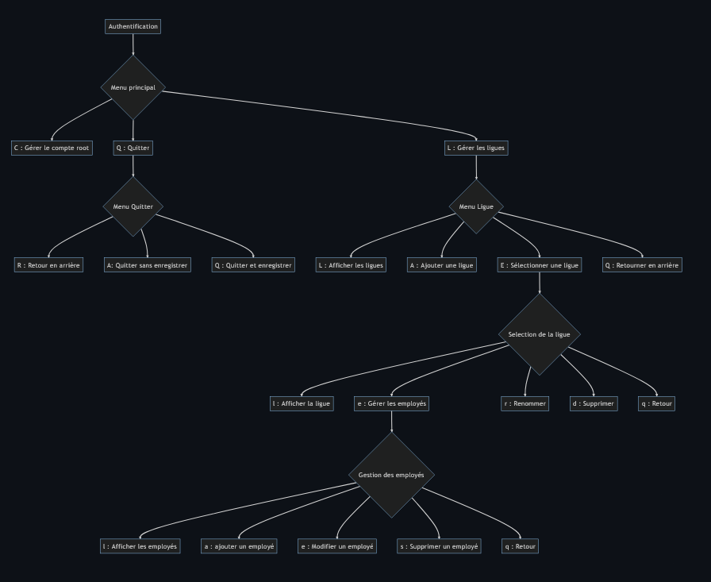

L'application permet de gérer les différents ligues de la M2L ainsi que leurs employés. Elle permet aussi de nommer un administrateur dans chaque ligue.
Le but de l'application étant de permettre aux différents employés des ligues de pouvoirs voir les autres employés de la ligue à laquelle il appartienne
ansi que l'administrateur de celle-ci, et aux administrateurs d'avoir la possibilité d'ajouter ou de supprimer des employés lambda.
Création d'un MCD permettant de créer plus tard la base de données :
Arborescence des menus de l'application :

Création de permission administrateur pour un employé par ligue :
L'application est effectuée en Java et permettra notamment de pouvoir ajouter, modifier ou supprimer des ligues ou encore des employés, et ce directement sur la console d'éclipse :